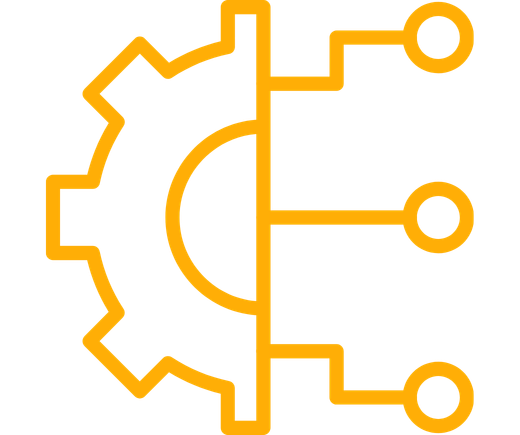
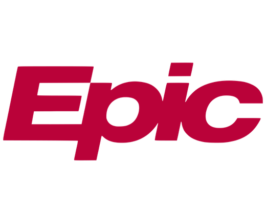
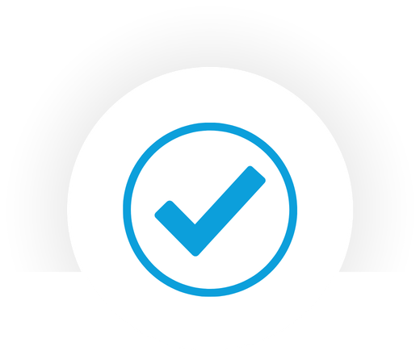
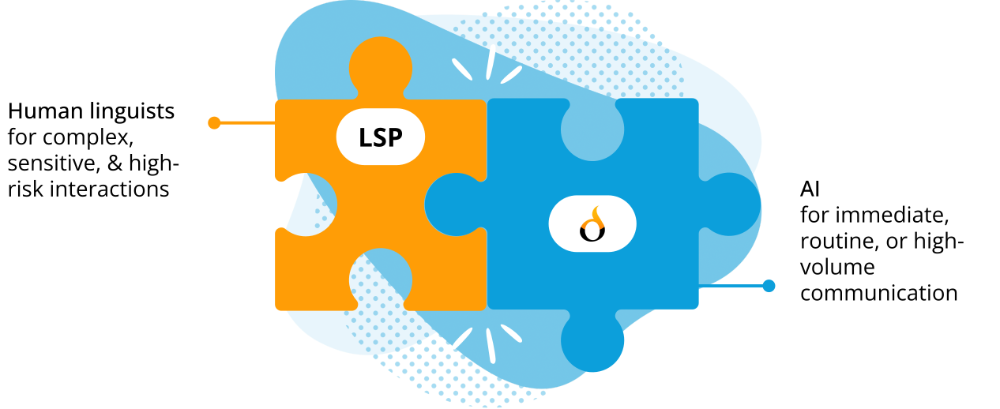
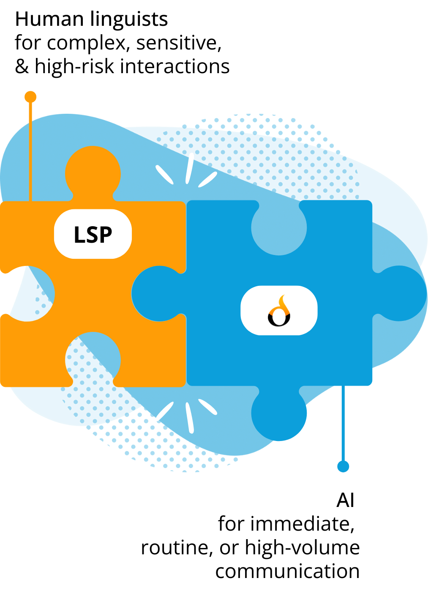

Contact Us
Explore how Diya helps LSPs meet customers' needs and differentiate in a competitive market
Healthcare-grade AI that extends your services, supports hybrid delivery, and helps you meet evolving health system expectations

Healthcare communication has changed.
Health systems increasingly expect language services to support:
Immediate, on-demand access without wait times
Multilingual communication beyond live encounters

Integration into EHR & Patient Portal workflows
Growing volumes without proportional staffing increases
Strong governance, auditability, & reporting
Operational constraints make it difficult for human-only delivery models to meet these demands at scale
Diya delivers the platform capabilities that integrate into existing LSP offerings and workflows


LSPs remain the service provider. Diya provides the infrastructure
Health systems increasingly ask LSPs to support use cases that are difficult to fulfill with human resources alone
With Diya, LSP partners can:
Provide zero-wait access during peak demand or off-hours
Support overflow & high-volume scenarios without delays
Expand coverage across departments & care settings
Say "yes" to more customer needs — without overextending your teams
AI supports speed and scale, while human interpreters remain central to high-risk communication


Allocate human expertise effectively
Reduce wait times
Improve operational efficiency
Health systems are increasingly evaluating AI-enabled language access through RFPs, pilots, and digital initiatives
Respond confidently to AI & technology requirements in bids
Offer integrated delivery without building new technology
Align your LSP with the direction healthcare is going
Expand beyond traditional live interpretation into additional, high-value service categories
Zero-Wait & Emergency Access Interpretation across care settings

Asynchronous translation embedded in clinical workflows
Multilingual patient education delivered consistently & safely
Multilingual digital forms integrated across sites & departments
All Diya workflows operate within Diya Safe AI™

The Diya Safe AI™ framework provides:

Audit trails & usage reporting
Clinical risk controls
Secure handling of clinical & patient data
Alignment with healthcare data protection & governance standards
Diya supports multiple partnership models designed to expand partner service offerings while protecting existing margins
White-label or co-branded deployments
Platform enablement for existing clients
Hybrid commercial structures
Align incentives
Preserve customer trust
Support growth
Diya partners with LSPs to strengthen — not replace — existing client relationships
Client
Relationships
We honor partner-held relationships & work collaboratively to preserve trust with your clients
Deal
Alignment
We support deal registration for joint pursuits & define engagement models to ensure transparency
Delivery
Clarity
We set engagement expectations upfront to ensure clear roles & responsibilities across deployments
Shape AI delivery, meet rising expectations, and expand your business without compromising quality
No.
Diya does not hire interpreters and does not compete with LSPs for human-delivered services. Diya is an AI communication platform that extends and augments LSP offerings — particularly in scenarios where human-only delivery models struggle to meet demand.
LSPs remain the service provider. Diya provides the infrastructure.
Diya is designed for hybrid delivery, not replacement.
AI handles:
Human interpreters are prioritized for:
In practice, this allows LSPs to allocate human expertise where it delivers the most value, rather than stretching limited resources thin. In many deployments, this model helps sustain demand for human interpreters by preventing missed encounters, cancellations, or client dissatisfaction due to availability gaps.
Diya strengthens it.
Health systems increasingly expect:
Diya enables LSPs to meet these expectations without rebuilding their technology stack, helping partners remain strategic vendors rather than transactional suppliers.
No.
Diya changes how services are delivered — not the value of language expertise — by handling
Diya allows LSPs to:
Yes.
Diya supports:
This allows partners to modernize delivery without disrupting existing client relationships or brand trust.
Diya supports AI-to-human escalation models.
When escalation criteria are met (e.g., complexity, sensitivity, confidence thresholds), interactions can be routed to human interpreters through existing LSP workflows.
Diya does not dictate escalation rules — partners and health systems define them collaboratively.
All Diya workflows operate within Diya Safe AI™, which provides:
This allows LSPs to meet enterprise governance expectations without independently building or maintaining complex compliance infrastructure.
No.
Diya partnerships are designed to be:
Partners retain autonomy while gaining access to platform capabilities that expand their service portfolio.
Partners generate value by:
Commercial models are structured to align incentives rather than displace revenue.
Healthcare communication is changing rapidly.
Health systems are moving toward:
Partnering with Diya allows LSPs to evolve with these expectations — without abandoning their core strengths or relationships.
Explore how Diya helps LSPs meet customers' needs and differentiate in a competitive market